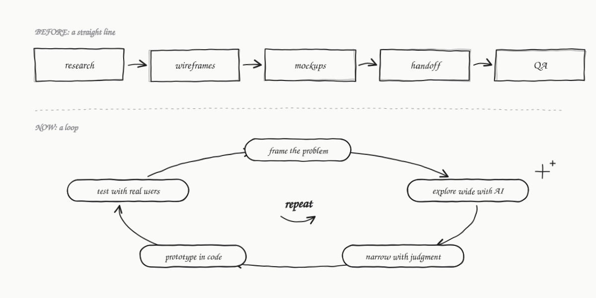
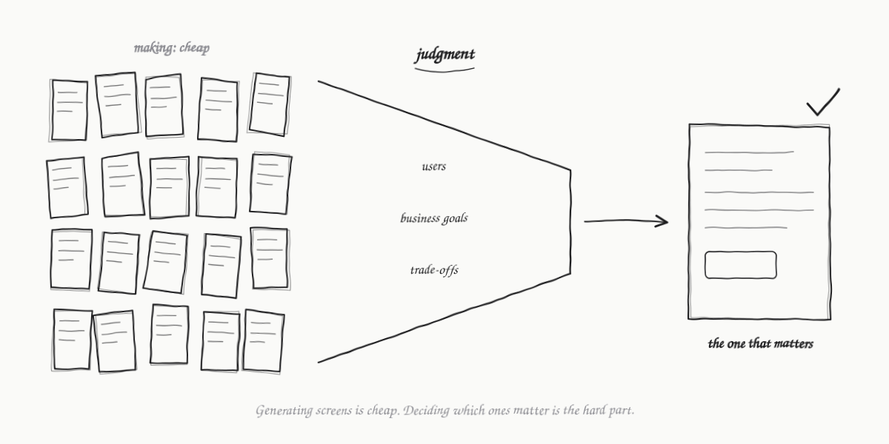

· 3 min read
My workflow has been updated!
Product design is changing fast, and the way I work is changing with it.
From a line to a loop
For most of my career, every project followed the same path:
research → wireframes → mockups → handoff → QA
Each step finished before the next one started. By the time real users saw anything, most of the big decisions were already locked in.
Now it’s a loop. I frame the problem, explore wide with AI, narrow it down with judgment, prototype in code and test with real users. Then I go around again.

What I’m seeing across the industry
- Design and engineering are blurring. More teams want designers who can prototype and ship, not just hand off.
- AI is compressing the making phase. Generating screens is cheap now. Deciding which ones matter is the hard part.
- Product thinking is the differentiator. Understanding business goals, users and trade-offs matters more than pixel polish.
- Speed is expected. Teams want validated ideas in days, not weeks.

What stays the same
The tools will keep changing. The designers who do well will be the ones who stay close to users, think in systems and keep learning. That’s what I’m holding on to.